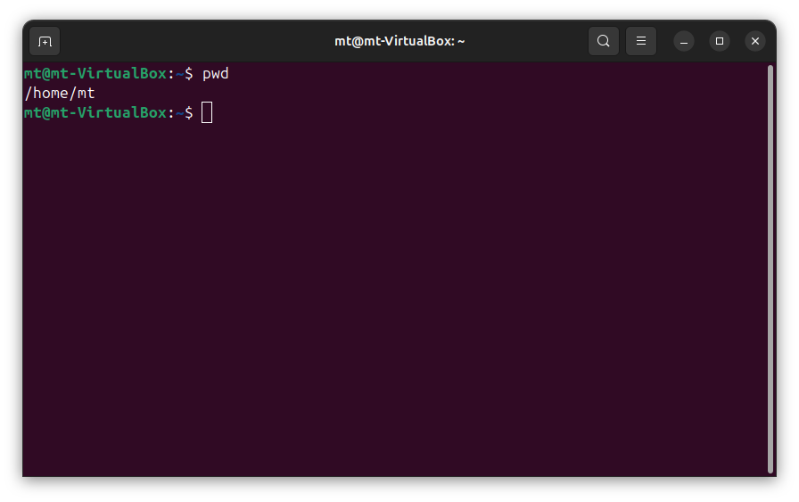
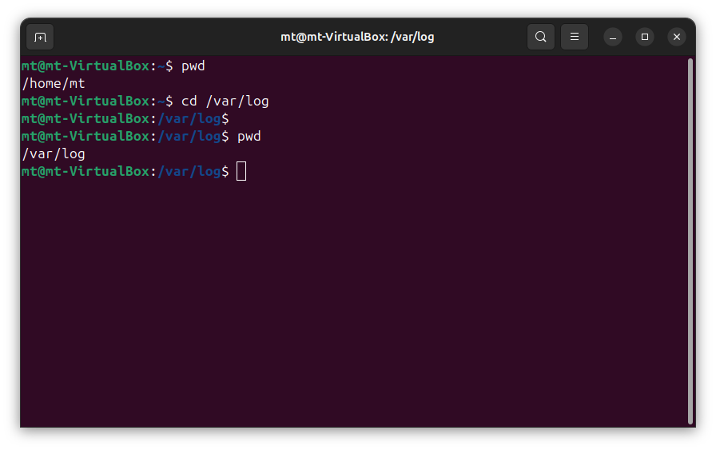
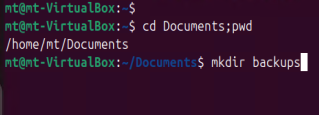
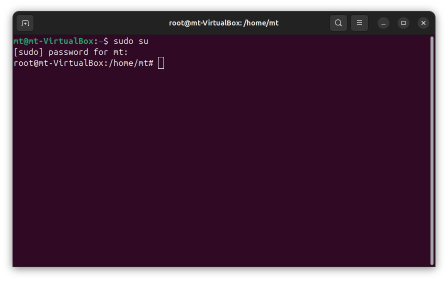
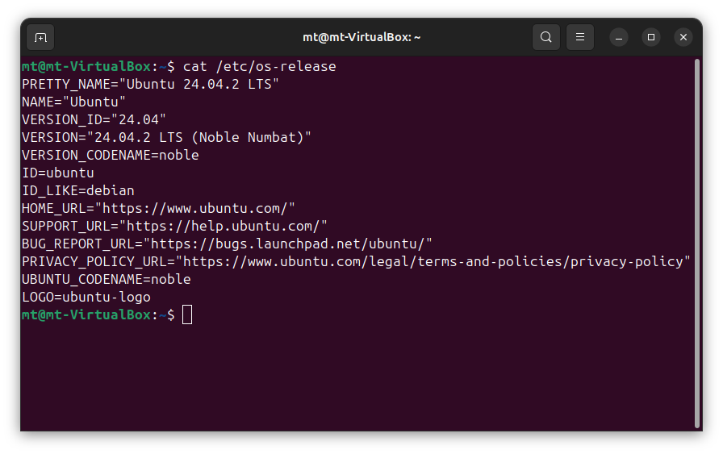
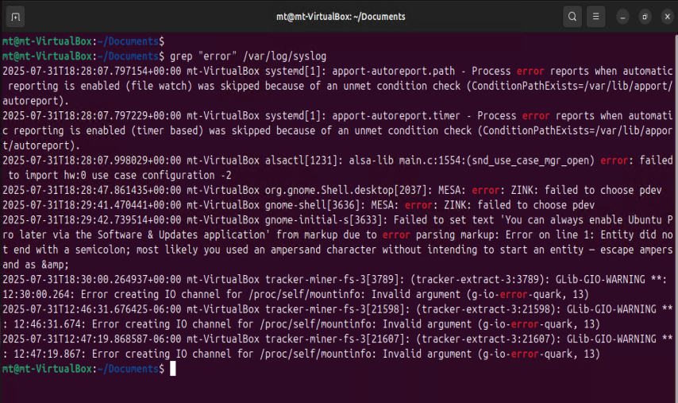
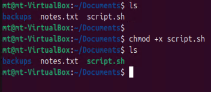
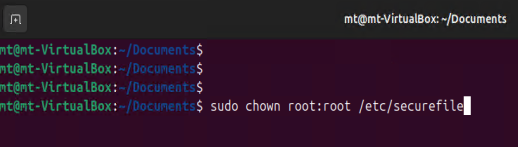
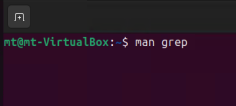

The following outlines 10 Essential Linux Commands that form a great foundation when starting out with Linux and other Unix-based systems.
Linux is everywhere, over 70% of the world's servers run on Linux. Linux runs on servers, networking equipment, IoT devices, embedded systems, mobile phones, etc. Linux is all over the place!
For anyone working with Linux, having a strong command-line foundation is essential, and beneficial depending on what circumstances are encountered. In this blog, I’ll share 10 Essential Linux Commands that are fundamental and go a long way in helping you navigate the filesystem, and work confidently in a Linux terminal.
pwdWhat it does: Shows where you are in the filesystem.
/home/mt directory as the current working directory.
lsWhat it does: Lists the contents of the current directory.
The ls -l does a long listing of the given directory contents to display them vertically on the terminal output.

cdWhat it does: Moves between directories.
This example navigates from the /home/mt directory to the /var/log directory in the file system hierarchy.
mkdirWhat it does: Creates new folders.
sudoWhat it does: Allows a user to run commands with root privileges without logging in as the root user.
catWhat it does: Displays the contents of files.
This example displays - concatenates the os-release information of the Linux distribution, residing in /etc/os-release.
grepWhat it does: Searches for patterns in text files.
This example searches for the specified word "error" in the /var/log/syslog file.
chmodWhat it does: Adjusts file read/write/execute permissions.
+x is the argument that instructs chmod to add (+) executable (x) permissions to the specified file.
chownWhat it does: Changes the user and group ownership of a file.
manWhat it does: Display help documentation for any command.
Any command you can run on Linux comes with built-in documentation via man or manual command.
This can be very useful when learning about new commands, finding options, and the pattern syntax of different commands.
Mastering these commands builds a solid foundation for working with Linux. They're usually the first tools you rely on when navigating the filesystem and handling everyday tasks.
What are some of your favorite Linux commands?
Back to Home